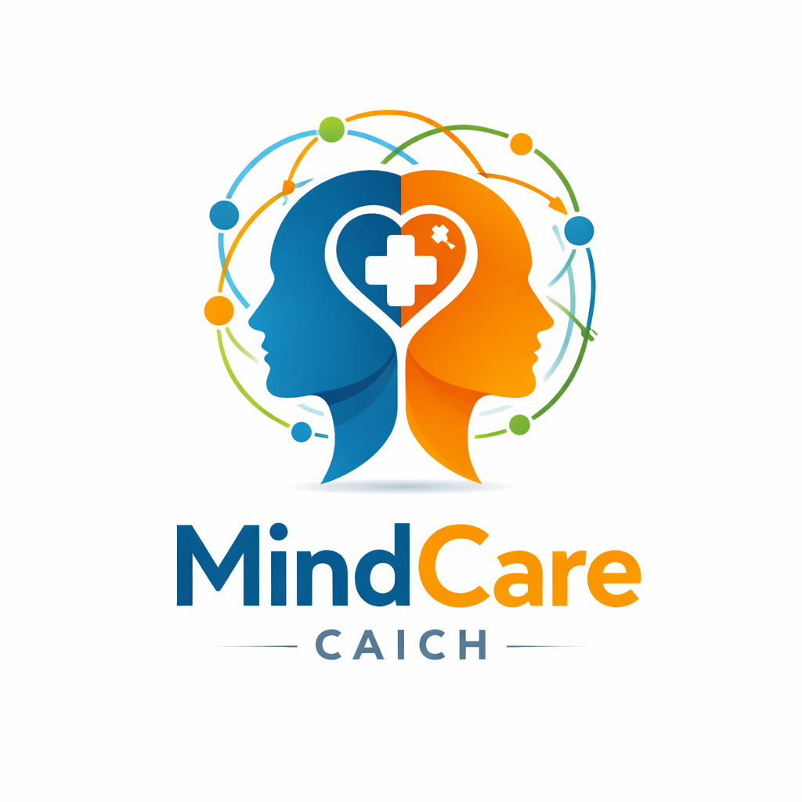
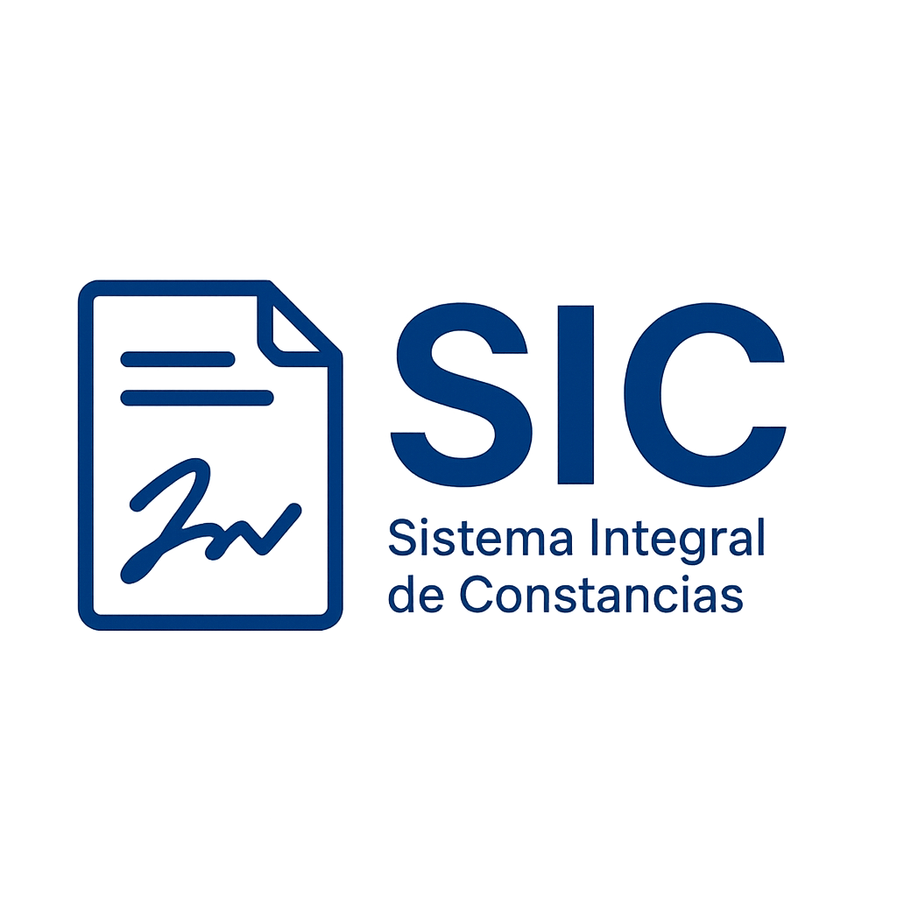
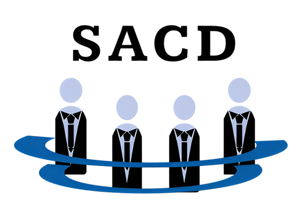
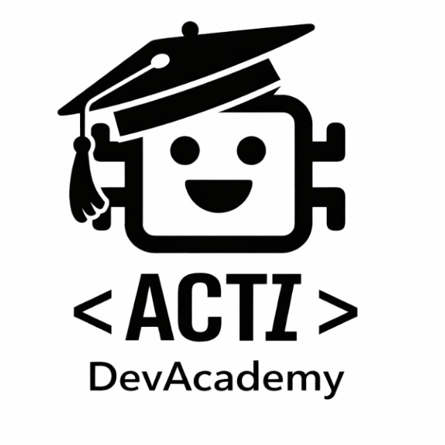
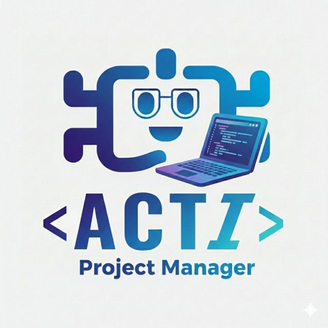

Proyectos que actualmente se encuentran en proceso de construcción por nuestro equipo.

Sistema MindCare de CAICH
Sistema web de salud mental desarrollado para el Centro de Atención e Investigación del Comportamiento Humano (CAICH), orientado al seguimiento y gestión de atención psicológica.

Sistema de Folios Digitales
Plataforma para la generación, gestión y seguimiento de folios digitales, sustituyendo procesos manuales en papel por un flujo digital eficiente.

Sistema de Gestión de Asesorías Académicas
Sistema para administrar y dar seguimiento a las asesorías académicas entre alumnos y docentes, facilitando la programación de sesiones y el control de asistencias.

Sistema de Administración del Consejo Directivo
Plataforma para la gestión y administración de actividades, acuerdos y documentación del Consejo Directivo, centralizando la información y agilizando la toma de decisiones.

ACTI DevAcademy
Plataforma de formación y capacitación tecnológica que centraliza cursos, talleres y rutas de aprendizaje. Enfocada en estudiantes, docentes y colaboradores, con seguimiento del progreso, certificaciones internas y fortalecimiento de competencias digitales.

ACTI PM
Sistema de gestión y seguimiento de proyectos académicos y de desarrollo de software. Facilita la planeación, asignación de tareas, control de tiempos y visualización del avance, apoyando la operación de los equipos de trabajo del ACTI.
ACTI KnowledgeHub
Repositorio institucional de documentación y conocimiento. Permite almacenar, clasificar y consultar documentos por proyecto, área o temática, reduciendo la deuda documental y promoviendo la reutilización del conocimiento generado en el ACTI.

ACTI AssetManager
Plataforma para la gestión de activos tecnológicos y recursos. Administra inventarios de equipos, licencias y herramientas, así como su asignación a usuarios o proyectos, mejorando el control y la trazabilidad de los recursos.

ACTI CampusNavigator
Sistema de navegación y localización dentro del campus, basado en mapas interactivos. Permite ubicar profesores, servicios, edificios y puntos de interés, con una arquitectura preparada para escalar a múltiples campus y dispositivos.

ACTI Bot
Asistente conversacional inteligente que funciona como punto de acceso unificado al ACTIVERSE. Atiende consultas sobre proyectos, servicios, recursos y ubicaciones, mejorando la experiencia del usuario mediante interacción en lenguaje natural.

ACTI Portal
Portal web institucional que actúa como entrada central al ACTIVERSE. Integra visual y funcionalmente todos los proyectos, ofreciendo autenticación unificada, navegación consistente e identidad institucional.